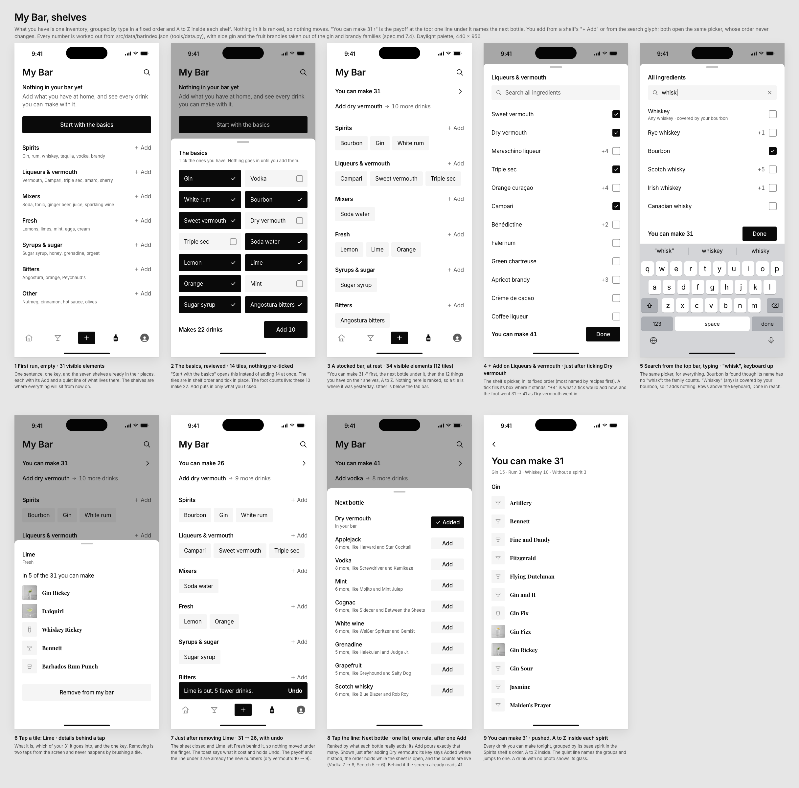
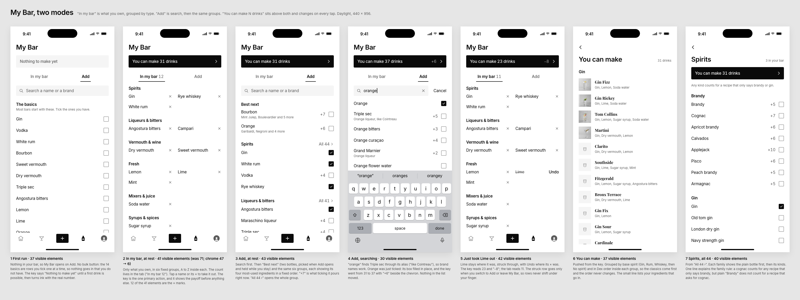
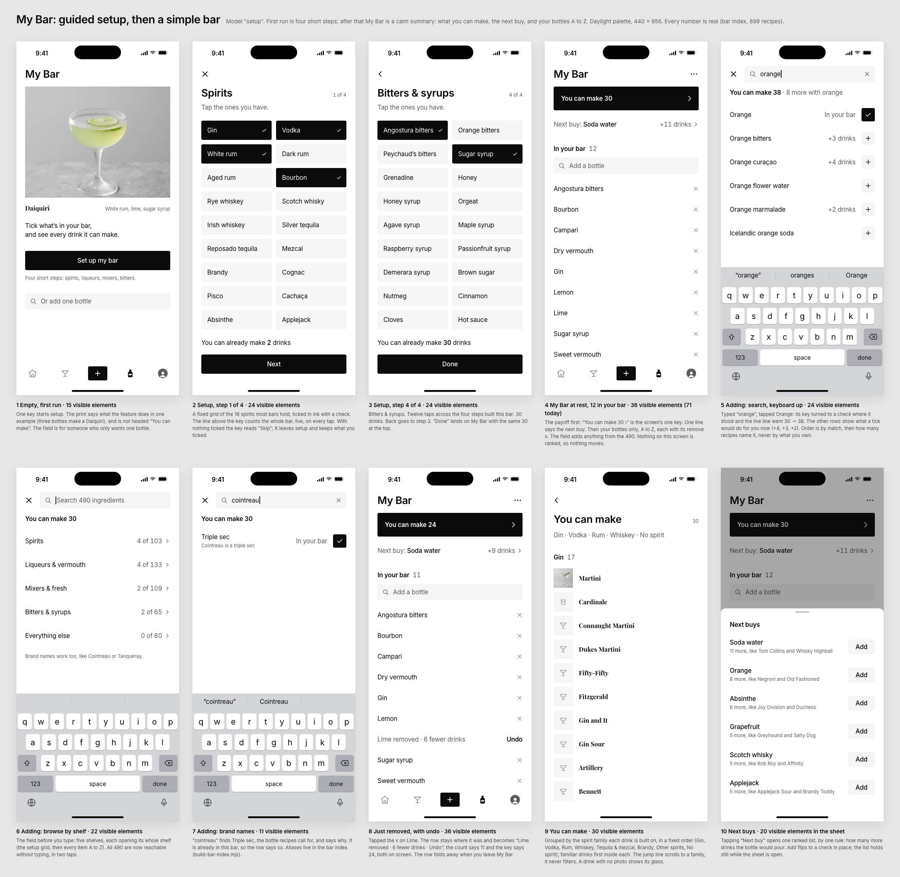

My Bar: three models, judged
9 Oct 2026. For Jan's notes "make my bar section way more organized … make it more easy to use" and "I want less stuff". I re-ran every drink count with shelves/tools/match.py, and all three boards are accurate. Step counts are my own walk of the frames, one step per tap, typed word or scroll.
Weights: organised and easy 35%, less stuff 20%, payoff visible 15%, works at 0 and at 100 items 15%, buildable on today's data 15%.
1. Shelves · 8.0
The seven shelves sit in a fixed order, and each holds its items A to Z. Nothing is ranked, so nothing moves. "You can make 31 ›" sits at the top with one next-bottle line under it. Each shelf's "+ Add" opens a picker in a fixed order with a live "+N" on every row. To remove something, tap its tile, then Remove, then use the toast's Undo. At rest the screen holds 34 elements (white-min has 31).
Strongest on Jan's word "organized". The screen answers "what's in my bar" without a tap, at 12 items and at 100. Weaker on two counts. Its payoff scrolls away on a big bar. It also needs the most new parts: short sheets, a toast and about 30 shelf overrides.

2. Two modes · 7.5
A fixed ink key, "You can make 31 drinks ›", shows the change from each tap (+6, −8). Two tabs sit under it. "In my bar" lists what you own, in groups. "Add" puts search first, then Best next, then the four most-used items in each group. You remove an item with one tap, and Undo appears where its × was.
It has the best payoff and the fewest steps (25), and it is the easiest to build. But the mode switch is one more thing to learn, and both modes are the busiest screens of the three (41 and 43 elements, with an × on every row). It also keeps vermouth grouped with wine.

3. Setup · 7.0
You set up once in four steps of 18 tiles each. After that, My Bar is a calm summary: a make key, a Next buy line, and your bottles as one A to Z list with an add field. You remove an item with its ×, and Undo appears in the same slot.
It has the best first run and a calm summary. But after setup, the bar is a single flat A to Z list with no groups. That is fine at 12 items and disorganised at 100, which works against the word Jan used. Adding means a full-screen window you have to close. It also takes the most steps (29).

Eight tasks, steps verified
| # | Task | Today | Shelves | Two modes | Setup | How I counted |
|---|---|---|---|---|---|---|
| 1 | First run, 10 of the 14 basics | 1 tap that adds all 14 (4 wrong) | 12 | 11 | 15 | Setup spreads the 10 over 4 steps (3 Nexts and a Done) |
| 2 | Add Campari | 3–4 | 3 | 4 | 4 | Campari is not in two modes' top four. Setup's window needs closing |
| 3 | Add Cointreau (brand) | fails | 4 | 4 | 4 | All three use aliases. "cointreau → triple sec" is already in the build script |
| 4 | Is Campari in my bar? | 2+, can be stale | 0 | 0 | 0 | At 100 items, only setup leaves you scanning one flat list |
| 5 | Remove lime | 2–4 | 2 | 1 | 1 | Shelves makes it 2 on purpose (tile, then Remove) |
| 6 | Undo it | 2 | 1 | 1 | 1 | Shelves' toast lasts 6s. The others last the whole visit |
| 7 | Open a famous drink you can make | 3–4 | 3 | 2 | 2 | In shelves' A to Z, Negroni falls below the fold |
| 8 | Best next bottle, add it | 2–3, three answers | 2 | 2 | 2 | Shelves and setup also show the answer at rest |
| Total | 16–22, plus one fail | 27 | 25 | 29 | Task 1 costs more than today's 1 tap in every model, because that tap was the lie |
Visible elements at rest: today 71, white-min mock 31, shelves 34, two modes 41 (43 in Add), setup 36.
Changes to bring into shelves
- Undo in place, not a toast (from two modes). The removed tile stays on its shelf, struck through, reading "Lime · Undo", until you leave the tab. Nothing reflows, and there is no Toast to build.
- A fixed payoff key (from two modes). "You can make 26 −5 ›" sits in an ink key that never scrolls, so a big bar still shows it.
- Classics first in the Make list (from two modes and setup). Inside each spirit, drinks go in Dex or familiarity order, not A to Z. Task 7 drops from 3 steps to 2.
- Canonical next-bottle rank (from two modes). The top suggestion reads Dry vermouth or Bourbon, not Applejack.
- Merge the duplicates and refile "other" (from two modes and setup). Add each merged id to RETIRED so a saved bar keeps pouring the same drinks.
- Alias copy (from setup). "Cointreau is a triple sec" under the hit, and "Brand names work too" in the empty search.
- Data fix all three found. Sloe gin comes out of the gin family, and apricot and peach brandy out of the brandy family (scripts/build-bar-index.mjs).